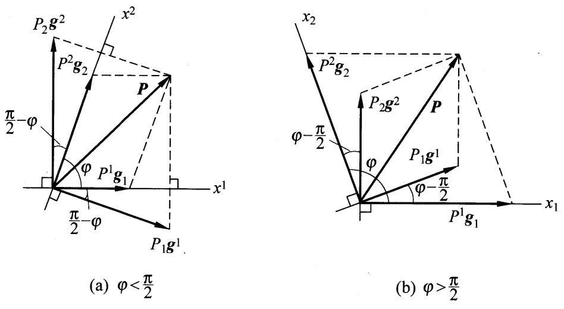

平面内直线坐标系\(x^1,x^2\)，坐标线互不相交，夹角为\(\varphi \lt \pi\).

若选沿\(x^1\)与\(x^2\)坐标线的参考矢量\(\boldsymbol{g}_1\)与\(\boldsymbol{g}_2\)（可以不是单位矢量），则任意矢量\(\boldsymbol{P}\)可以用它对\(\boldsymbol{g}_1\)与\(g_2\)分解的分矢量\(P^1\boldsymbol{g}_1\)与\(P^2\boldsymbol{g}_2\)之和表示：
$$\boldsymbol{P} = P^1\boldsymbol{g}_1 + P^2\boldsymbol{g}_2 = \sum_{a=1}^2P^\alpha\boldsymbol{g}_\alpha = P^\alpha\boldsymbol{g}_\alpha$$上式中最后的表达式采用了Einstein求和约定，略去了求和符号.
选定参考矢量\(\boldsymbol{g}_1,~\boldsymbol{g}_2\)后，用初等代数的方法可以确定任意矢量的分量\(P^1,~P^2\).
引入沿\(x^1,~x^2\)的单位矢量\(\boldsymbol{i}_1,~\boldsymbol{i}_2\)，则：
$$\boldsymbol{i}_1\cdot\boldsymbol{i}_1 = \boldsymbol{i}_2\cdot\boldsymbol{i}_2 = 1$$ $$\boldsymbol{i}_1\cdot\boldsymbol{i}_2 = \boldsymbol{i}_2\cdot\boldsymbol{i}_1 = \cos\varphi \neq 0$$ $$\boldsymbol{g}_1 = |\boldsymbol{g}_1|\boldsymbol{i}_1,\quad \boldsymbol{g}_2 = |\boldsymbol{g}_2|\boldsymbol{i}_2$$与笛卡尔坐标系不同，因\(\boldsymbol{g}_1,~\boldsymbol{g}_2\)不是单位矢量且不正交，故矢量\(\boldsymbol{P}\)在\(\boldsymbol{g}_\alpha(\alpha = 1,2)\)上的投影不等于其分量：
由\(\boldsymbol{P}\cdot\boldsymbol{i}_1\)与\(\boldsymbol{P}\cdot\boldsymbol{i}_2\)表述\(P^1\)与\(P^2\)的表达式，需通过解上述联立代数方程得到，显然是不方便的.
引入一对与\(\boldsymbol{g}_\alpha(\alpha = 1,2)\)对偶的参考矢量\(\boldsymbol{g}^\alpha(\alpha=1,2)\)，满足：
$$\boldsymbol{g}^1\cdot\boldsymbol{g}_2 = \boldsymbol{g}^2\cdot\boldsymbol{g}_1 = 0$$ $$\boldsymbol{g}^1\cdot\boldsymbol{g}_1 = \boldsymbol{g}^2\cdot\boldsymbol{g}_2 = 1$$1式表明\(\boldsymbol{g}^1, \boldsymbol{g}^2\)分别与\(\boldsymbol{g}_2, \boldsymbol{g}_1\)相互正交.
2式可推导出\(|\boldsymbol{g}^1|\)与\(|\boldsymbol{g}^2|\)：
设\(<\boldsymbol{g}^1,\boldsymbol{g}_1> = \theta\)
当\(\phi\)为锐角时，\(\theta = \pi/2 - \phi\)；当\(\phi\)为钝角时，\(\theta = \phi - \pi/2\).
$$\begin{align} \therefore \boldsymbol{g}^1\cdot\boldsymbol{g}_1 &= |\boldsymbol{g}^1||\boldsymbol{g}_1|\cos\theta\\ &= |\boldsymbol{g}^1||\boldsymbol{g}_1|\sin\phi\\ &= 1 \end{align}$$ $$\therefore |\boldsymbol{g}^1| = \frac{1}{|\boldsymbol{g}_1|\sin\phi}$$称参考矢量\(\boldsymbol{g}_\alpha\)为协变基矢量.
与其对偶的参考矢量\(\boldsymbol{g}^\beta(\beta = 1,2)\)称为逆变基矢量.
它们之间所满足的关系式可统一写成对偶条件：
$$\boldsymbol{g}^\beta\cdot\boldsymbol{g}_\alpha = \delta_\alpha^\beta~(\alpha, \beta = 1,2)$$式中\(\delta_\alpha^\beta\)称为Kronecker \(\delta\)，为：
$$\delta_\alpha^\beta = \begin{cases} 1,~\alpha = \beta\\ 0,~\alpha \neq \beta \end{cases}$$由对偶条件可以从协变基矢量唯一地确定逆变基矢量，反之亦然.
这后面做的一系列分解我不知道有什么意义？将一种未知形式改写成了另一种未知形式吗？
以后对于每个坐标系都将引入这两组互为对偶的基矢量，并用下标与上标区分协变与逆变指标.
利用它们及对偶关系式，可以方便地求矢量的分量，不再需要求解方程组.
如对\(\boldsymbol{P} = P^1\boldsymbol{g}_1 + P^2\boldsymbol{g}_2\)，矢量对协变基矢量\(\boldsymbol{g}_\alpha\)分解的分量\(P^\alpha\)（称为矢量\(\boldsymbol{P}\)的逆变分量）为：
或统一写成：
$$P^\alpha = \boldsymbol{P}\cdot\boldsymbol{g}^\alpha,\quad \alpha = 1,2$$矢量\(\boldsymbol{P}\)还可以对逆变基矢量\(\boldsymbol{g}^\beta\)分解：
$$\boldsymbol{P} = P_1\boldsymbol{g}^1 + P_2\boldsymbol{g}^2 = P_\beta\boldsymbol{g}^\beta$$\(P_\beta\)称为矢量\(\boldsymbol{P}\)的协变分量.
利用对偶关系可以方便地求得矢量的协变分量：
三维空间点的位置可以用坐标原点至该点的矢径\(\boldsymbol{r}(x_1, x_2, x_3)\)表示.
$$\boldsymbol{r} = x^1\boldsymbol{g}_1 + x^2\boldsymbol{g}_2 + x^3\boldsymbol{g}_3 = x^i\boldsymbol{g}_i$$矢径对坐标的偏导数，又称自然基矢量.
$$\boldsymbol{g}_i = \frac{\partial\boldsymbol{r}}{\partial x^i}$$协变基矢量方向沿坐标线正方向，大小等于当坐标\(x^i\)有\(1\)单位增量时两点间的距离.
因三个坐标线非共面，故：
$$[\boldsymbol{g}_1,\quad \boldsymbol{g}_2,\quad \boldsymbol{g}_3] = \boldsymbol{g}_1\cdot(\boldsymbol{g}_2\times\boldsymbol{g}_3)\neq 0$$即\(\boldsymbol{g}_1, \boldsymbol{g}_2, \boldsymbol{g}_3\)线性无关.
当\(\boldsymbol{g}_1, \boldsymbol{g}_2, \boldsymbol{g}_3\)构成右手系时，混合积为正值，记为：
$$[\boldsymbol{g}_1,\quad \boldsymbol{g}_2,\quad \boldsymbol{g}_3] = \sqrt{g}$$定义一组3个与协变基矢量\(\boldsymbol{g}_i\)互为对偶的逆变基矢量\(\boldsymbol{g}^j\)，满足对偶条件：
逆变基矢量根据对偶条件由协变基矢量唯一确定.
具体计算方式有两种：
方法1 $$\because \boldsymbol{g}^1\perp\boldsymbol{g}_2, \boldsymbol{g}_3$$ $$\therefore \boldsymbol{g}^1\parallel \boldsymbol{g}_2\times\boldsymbol{g}_3$$[令]
$$\boldsymbol{g}^1 = a\boldsymbol{g}_2\times\boldsymbol{g}_3$$ $$\because \boldsymbol{g}^1\cdot\boldsymbol{g}_1 = 1$$ $$\therefore a(\boldsymbol{g}_2\times\boldsymbol{g}_3)\cdot\boldsymbol{g}_1 = 1$$ $$\because (\boldsymbol{g}_2\times\boldsymbol{g}_3)\cdot\boldsymbol{g}_1 = \sqrt{g}$$ $$\therefore a = \frac{1}{\sqrt{g}}$$故：
$$\boldsymbol{g}^1 = \frac{1}{\sqrt{g}}(\boldsymbol{g}_2\times\boldsymbol{g}_3)$$ $$\boldsymbol{g}^2 = \frac{1}{\sqrt{g}}(\boldsymbol{g}_3\times\boldsymbol{g}_1)$$ $$\boldsymbol{g}^3 = \frac{1}{\sqrt{g}}(\boldsymbol{g}_1\times\boldsymbol{g}_2)$$ 方法2将逆变基矢量\(\boldsymbol{g}^1~(i=1,2,3)\)作为矢量对协变基\(\boldsymbol{g}_j\)分解：
$$\boldsymbol{g}^i = g^{ij}\boldsymbol{g}_j\quad i=1,2,3$$上式中的系数\(g^{ij}\)构成\(3\times 3\)矩阵。
$$\boldsymbol{g}^i\cdot\boldsymbol{g}^j = g^{ik}\boldsymbol{g}_k\cdot\boldsymbol{g}^j = g^{ik}\delta_k^j = g^{ij}\quad i,j = 1,2,3$$ $$\because \boldsymbol{g}^i\cdot\boldsymbol{g}^j = \boldsymbol{g}^j\cdot \boldsymbol{g}^1$$ $$\therefore g^{ij} = g^{ji}$$同样地，协变基矢量\(\boldsymbol{g}_i\)也可以对逆变基矢量\(\boldsymbol{g}^j\)分解：
$$\boldsymbol{g}_i = g_{ij}\boldsymbol{g}^j\quad i=1,2,3$$且有：
$$\boldsymbol{g}_i\cdot\boldsymbol{g}_j = g_{ij}\quad i,j = 1,2,3$$ $$g_{ij} = g_{ji}$$所以，\(g^{ij}\)与\(g_{ji}\)各自构成\(3\times 3\)的对称矩阵.
[设]\([t_{ij}] = [g^{ij}][g_{ij}]\).
$$t_{ij} = g^{ij}\cdot g_{ij} = \boldsymbol{g}^{i}\cdot\boldsymbol{g}^j\cdot\boldsymbol{g}_i\cdot\boldsymbol{g}_j = \delta_i^j\quad i,j=1,2,3$$所以\([g^{ij}]\)与\([g_{ij}]\)为互逆矩阵，只有六个独立分量：
$$[g^{ij}] = [g_{ij}]^{-1}$$[注]本书以\([]\)表示矩阵，矩阵元素的前指标表示行号，后指标表示列号.
6个独立分量是指除了主对角线上3个外的6个.
称\(g_{ij}\)为度量张量的协变分量；
称\(g^{ij}\)为度量张量的逆变分量.
与二维问题相同，矢量\(\boldsymbol{P}\)既可以对协变基、又可以对逆变基分解：
$$\boldsymbol{P} = P^i\boldsymbol{g}_i = P_j\boldsymbol{g}^j$$上两式称为矢量分量的指标升降关系式.